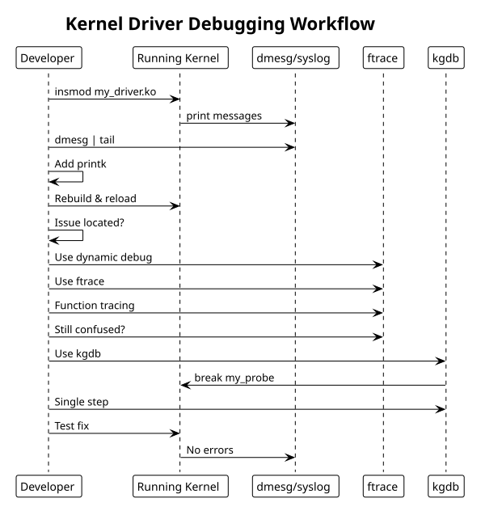

Debugging Techniques
Table of Contents
- 1. printk: Kernel Logging
- 2. Dynamic Debug
- 3. Trace Events (kernel tracing)
- 4. Kernel Debugger (kgdb)
- 5. pr_devel and Compile-Time Debug
- 6. Module Parameter Debugging
- 7. Hardware Inspection
- 8. Crash Dump Analysis
- 9. Common Debugging Workflow
- 10. Example: Debug-enabled driver
- 11. Debugging Workflow Diagram
- 12. See Also
Kernel debugging: printk, dynamic debug, trace events, kgdb, crash analysis.
1. printk: Kernel Logging
Basic logging with log levels:
#include <linux/kernel.h>
// Log levels (KERN_EMERG, KERN_ALERT, ..., KERN_DEBUG)
pr_err("Error: %d\n", errno);
pr_warn("Warning: out of memory\n");
pr_info("Device registered at 0x%lx\n", addr);
pr_debug("Entering function\n");
// Device-specific logging (includes device name)
dev_err(&pdev->dev, "probe failed: %d\n", ret);
dev_info(&pdev->dev, "device initialized\n");
// Read kernel log
dmesg
dmesg | tail
tail -f /var/log/kern.log
2. Dynamic Debug
Enable per-module debugging at runtime (compile-time overhead minimal):
# Enable all debug messages in a module
echo "module my_driver +p" > /proc/dynamic_debug/control
# Enable by function
echo "func my_probe +p" > /proc/dynamic_debug/control
# Enable by file
echo "file drivers/my_driver.c +p" > /proc/dynamic_debug/control
# List current settings
cat /proc/dynamic_debug/control | grep my_driver
Code usage:
#define pr_fmt(fmt) "%s: " fmt, __func__
pr_debug("value: %d\n", val); // enabled via dynamic_debug control
3. Trace Events (kernel tracing)
Higher-level tracing via ftrace/trace-cmd:
#include <trace/events/custom.h>
// Define custom trace event (in header file)
// Then use:
trace_custom_event(value, status);
#+end_str>
Usage:
#+begin_src bash
# Enable tracing
echo 1 > /sys/kernel/debug/tracing/tracing_on
# Trace specific events
echo "my_driver:*" > /sys/kernel/debug/tracing/set_event
# Check trace output
cat /sys/kernel/debug/tracing/trace
# Real-time view
tail -f /sys/kernel/debug/tracing/trace_pipe
# Disable tracing
echo 0 > /sys/kernel/debug/tracing/tracing_on
# Use trace-cmd tool
trace-cmd record -e my_driver:*
trace-cmd report
4. Kernel Debugger (kgdb)
Remote debugging via serial/network:
Configuration (requires specific kernel config):
CONFIG_KGDB=yCONFIG_KGDB_SERIAL_CONSOLE=y(serial)- Serial console configured
Start debugging:
#+begin_src bash
gdb vmlinux (gdb) set arch <target-arch> (gdb) target remote /dev/ttyUSB0 # or network port
(gdb) break my_probe (gdb) continue (gdb) bt # backtrace (gdb) list # source code (gdb) step/next # step/next line (gdb) print var # print variable #+end_str>
5. pr_devel and Compile-Time Debug
Conditional compilation:
#ifdef DEBUG
#define pr_debug_devel(fmt, ...) pr_info(fmt, ##__VA_ARGS__)
#else
#define pr_debug_devel(fmt, ...) do { } while (0)
#endif
pr_debug_devel("detailed info only in debug builds\n");
// Compile with: make CONFIG_DEBUG=1
6. Module Parameter Debugging
Allow runtime parameter changes:
static int debug_level = 0;
module_param(debug_level, int, 0644);
MODULE_PARM_DESC(debug_level, "Debug verbosity level (0-3)");
static void log_debug(int level, const char *fmt, ...)
{
va_list args;
if (level <= debug_level) {
va_start(args, fmt);
vprintk(fmt, args);
va_end(args);
}
}
// Usage: insmod my_driver.ko debug_level=2
7. Hardware Inspection
Read/write memory-mapped registers for debugging:
# Display memory content as hex dump
hexdump /dev/mem -s 0x1000 -n 256
# Using devmem tool
devmem 0x1000 32 # read 32-bit value at 0x1000
devmem 0x1000 32 0xff # write 0xff to 0x1000
# Using /proc/iomem
cat /proc/iomem | grep my_device
# Module info
cat /proc/modules # loaded modules
cat /sys/module/my_driver/ # module sysfs interface
8. Crash Dump Analysis
When kernel crashes, capture dmesg and use crash utility:
#+begin_src bash
echo c > /proc/sysrq-trigger
crash vmlinux /var/crash/vmcore (crash) bt # backtrace (crash) dis -l <function> # disassemble with source (crash) mod -v # module details #+end_str>
9. Common Debugging Workflow
- Probe issues: Add
pr_info()at key points in probe/remove - IRQ issues: Check
grep my_driver /proc/interrupts, verifydevm_request_irq()call - Memory leaks: Use
kmemleak:echo scan > /sys/kernel/debug/kmemleak - Lock issues: Enable
CONFIG_DEBUG_SPINLOCK, check for deadlocks viadmesg - Power/suspend: Check device tree binding for
pm-runtimeproperties - Performance: Use ftrace or perf to profile hot paths
10. Example: Debug-enabled driver
#define pr_fmt(fmt) KBUILD_MODNAME ": " fmt
#ifdef DEBUG
#define DBG(fmt, ...) pr_debug(fmt, ##__VA_ARGS__)
#else
#define DBG(fmt, ...) no_printk(fmt, ##__VA_ARGS__)
#endif
static int my_probe(struct platform_device *pdev)
{
struct device *dev = &pdev->dev;
struct my_dev *mydev;
DBG("probe called\n");
mydev = devm_kzalloc(dev, sizeof(*mydev), GFP_KERNEL);
if (!mydev) {
dev_err(dev, "allocation failed\n");
return -ENOMEM;
}
DBG("memory allocated at %p\n", mydev);
// ... rest of probe
dev_info(dev, "device registered\n");
return 0;
}
// Compile debug version: make DEBUG=1
// Load with: insmod my_driver.ko (debug messages suppressed by default)
// Enable: echo "module my_driver +p" > /proc/dynamic_debug/control
11. Debugging Workflow Diagram
